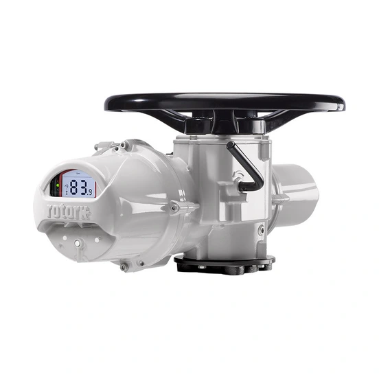

Truy vấn "part number Rotork" thường xuất phát từ một tình huống cụ thể: cần báo giá thiết bị thay thế nhưng chỉ có một chuỗi ký tự chưa rõ là model hay part number đầy đủ. Nhầm hai khái niệm này khiến báo giá sai cấu hình hoặc chậm tiến độ vì phải hỏi lại nhiều lần. Bài viết giải thích part number là gì, khác model và range ra sao, minh họa bằng ví dụ thật từ ba dòng actuator Rotork: IQ3 Pro, CMA (CML/CMQ/CMR) và Skilmatic SI.

Trả lời nhanh
- Part number (order code) là chuỗi đặt hàng đầy đủ, xác định một cấu hình cụ thể — không phải mọi chuỗi ký tự trên tài liệu đều là part number.
- Model (ví dụ CML-1500, SI3-161A) xác định kích cỡ/dải torque-thrust, nhưng thường vẫn còn tùy chọn cấu hình chưa chốt.
- Range/family (IQ3 Pro, CMA, Skilmatic SI) là tên dòng sản phẩm, phạm vi rộng nhất, không dùng để báo giá chính xác.
- Chỉ gọi một chuỗi là "part number" khi nó được xác nhận từ nameplate, BOM, PO hoặc báo giá chính hãng — không tự suy ra từ model.
Bảng phân biệt range, model, part number, serial number
| Cấp dữ liệu | Định nghĩa | Ví dụ trong tài liệu Rotork | Dùng để làm gì |
|---|---|---|---|
| Range/family | Tên dòng sản phẩm, chưa gắn kích cỡ hay cấu hình | IQ3 Pro, CMA, Skilmatic SI | Định hướng tra cứu, chọn trang sản phẩm |
| Model/kích cỡ | Biến thể trong range, thường gắn dải torque/thrust cụ thể | CML-1500, CMQ-500, CMR-125, SI3-161A | Xác định vùng tải trọng cần dùng, chưa đủ để đặt hàng |
| Part number/order code | Chuỗi đặt hàng đầy đủ, mã hóa điện áp, tín hiệu, tùy chọn | Ví dụ cấu trúc thật trên datasheet Skilmatic: SI3-030-035/O0, SI3-161A-100/C2D | Dùng để đặt hàng và báo giá chính xác |
| Serial number | Định danh một thiết bị cụ thể, gắn với đơn hàng/invoice | Số riêng theo từng máy, không công khai đại trà | Tra cứu lịch sử một thiết bị cụ thể, không dùng làm từ khóa sản phẩm |
Lưu ý: các ví dụ trong bảng lấy nguyên văn từ tài liệu kỹ thuật công khai để minh họa cấu trúc, không phải part number của một đơn hàng cụ thể. Khi báo giá thực tế, part number phải lấy từ nameplate hoặc BOM của chính thiết bị cần mua.
Ví dụ theo từng range: model vs part number khác nhau ở đâu
IQ3 Pro — actuator điện thông minh
Range IQ3 Pro chia theo biến thể như IQ3 Pro (multi-turn tiêu chuẩn), IQ3S Pro (1-pha), IQ3D Pro (DC), IQ3H Pro (tốc độ cao), IQ3M/ML Pro (modulating), với dải torque trực tiếp 14–3.000 Nm cho bản 3-pha tiêu chuẩn. Đây là thông tin ở cấp model/biến thể. Part number đầy đủ của một actuator IQ3 Pro còn mã hóa thêm điện áp, loại tín hiệu điều khiển, chứng nhận vùng nguy hiểm và tùy chọn cơ khí — các trường này chỉ có trên nameplate hoặc tài liệu đặt hàng của thiết bị cụ thể, tài liệu tổng quan (flyer) không công bố đầy đủ cấu trúc mã.
CMA — CML, CMQ, CMR
CMA là range điều khiển chính xác, chia theo ba nhóm: CML (linear), CMQ (part-turn), CMR (multi-turn). Mỗi nhóm có nhiều model theo dải tải trọng, ví dụ CML-100 đến CML-3000 (thrust định mức 445–13.345 N), CMQ-250 đến CMQ-1000 (torque định mức 28,2–113 Nm), CMR-50 đến CMR-250 (torque định mức 5,6–28,2 Nm). Đây vẫn là cấp model; part number đặt hàng đầy đủ còn thêm nguồn điện (1-pha/DC), tùy chọn Reserve Power Pack, local control và positional display.
Skilmatic SI — SI3, SI4
SI3 có dải torque quarter-turn 75–36.000 Nm; SI4 mở rộng tới 200.000 Nm và cho phép tùy chỉnh sâu hơn (accumulator, nhiều lựa chọn dự phòng). Trong datasheet kỹ thuật, actuator được ký hiệu theo cấu trúc kích cỡ-cấu hình, ví dụ SI3-030-035/O0 hay SI3-161A-100/C2D — gần với part number hơn so với IQ3 Pro và CMA vì đã gắn thêm hậu tố cấu hình lò xo/hướng fail-safe. Dù vậy, cấu hình đầy đủ để đặt hàng (điện áp, loại tín hiệu ESD/PST, chứng nhận SIL) vẫn cần xác nhận riêng theo từng đơn hàng.
Cách xác định bạn đang có model hay part number
- Chuỗi chỉ có tên range (IQ3 Pro, CMA, Skilmatic SI) → đây là range, cần hỏi thêm model/kích cỡ.
- Chuỗi có tên range kèm số hiệu kích cỡ (CML-1500, SI3-161A) → đây là model, đủ để định hướng báo giá sơ bộ nhưng chưa đủ để chốt đơn hàng.
- Chuỗi dài, có nhiều đoạn phân tách bằng gạch ngang/gạch chéo, đúng nguyên văn từ nameplate hoặc BOM → nhiều khả năng là part number/order code, cần giữ nguyên ký tự khi gửi báo giá.
- Số riêng biệt không lặp lại giữa các thiết bị cùng loại, thường in cạnh part number → là serial number, không dùng thay part number.
- Nếu không chắc, gửi ảnh toàn bộ nameplate thay vì gõ lại một phần — người kiểm tra kỹ thuật sẽ xác định đúng cấp dữ liệu.
Model và range liên quan
| Model/range | Lý do liên quan | Trang sản phẩm |
|---|---|---|
| Danh mục sản phẩm | Điểm bắt đầu tra cứu khi chỉ có tên range | Sản phẩm Rotork tại Việt Nam |
| IQ3 Pro | Ví dụ minh họa cấp model trong bài | IQ3 Pro Rotork |
| CMA | Ví dụ CML/CMQ/CMR minh họa cấp model theo tải trọng | CMA Rotork |
| Skilmatic SI | Ví dụ cấu trúc gần part number nhất trong bài | Skilmatic SI Rotork |
| Cách đọc nameplate Rotork | Bài liên quan cùng cụm, hướng dẫn quy trình đọc nhãn thực tế | Cách đọc nameplate Rotork |
Xác minh part number trước khi báo giá tại Việt Nam
Fast Group Engineering phân phối và cung cấp sản phẩm Rotork chính hãng tại Việt Nam. Khi khách hàng chỉ có model hoặc range, đội ngũ kỹ thuật hỗ trợ xác định các trường cấu hình còn thiếu trước khi báo giá, thay vì báo giá đại diện theo model chung. Catalogue, datasheet, CO/CQ và hồ sơ liên quan được kiểm tra, xác nhận theo từng sản phẩm, cấu hình và lô hàng.
Câu hỏi thường gặp
Có thể báo giá chỉ bằng model, không cần part number không?
Có thể báo giá sơ bộ theo model, nhưng giá và thời gian giao hàng chính xác phụ thuộc vào part number đầy đủ vì đó là cấu hình đã chốt điện áp, tín hiệu, mounting và các tùy chọn khác.
Part number trên nameplate bị mờ một phần thì làm gì?
Gửi ảnh chụp phần còn đọc được kèm ảnh toàn cảnh actuator, số PO hoặc packing list nếu còn lưu. Fast Group Engineering đối chiếu chéo các nguồn này thay vì suy đoán ký tự bị mất.
Serial number có phải là part number không?
Không. Serial number định danh một thiết bị cụ thể theo đơn hàng, còn part number mô tả cấu hình đặt hàng và có thể lặp lại trên nhiều thiết bị giống nhau.
Tên model như CML-1500 hay SI3-161A có phải part number đầy đủ không?
Đây là ký hiệu model/kích cỡ actuator, dùng để xác định dải torque hoặc thrust. Part number đặt hàng đầy đủ có thể còn thêm hậu tố mô tả điện áp, tín hiệu và tùy chọn, cần xác nhận theo nameplate hoặc tài liệu đặt hàng thực tế.
Gửi part number hoặc BOM để đối chiếu
Để kiểm tra đúng mã, vui lòng gửi ảnh nameplate rõ nét, part number hoặc BOM, số lượng, điện áp/tín hiệu điều khiển, loại van và điều kiện vận hành cho Fast Group Engineering qua Zalo/điện thoại (+84) 938 888 958 hoặc email minhduc@fastgroup.vn.
Nguồn tham khảo
- PUB002-407-00, IQ3 Pro Range Flyer, Issue 05/26 — trang 2 (dải torque theo biến thể IQ3 Pro/IQT3 Pro).
- PUB094-036-00, CMA Range Flyer, Issue 05/26 — trang 2 (bảng model CML/CMQ/CMR và tải trọng định mức).
- PUB021-064, Skilmatic SI Range Brochure — trang 6 (bảng torque tổng hợp SI3/SI4).
- PUB021-062, Skilmatic SI range – Product datasheet — trang 3 (phạm vi SI3/SI4), trang 4 (bảng SI3-SR operating torques, ví dụ ký hiệu actuator).
Ghi chú nội bộ: các ví dụ part number/model trong bài trích nguyên văn từ tài liệu công khai để minh họa cấu trúc, không phải cấu hình đã bán cho khách hàng cụ thể. Không dùng các ví dụ này để báo giá trực tiếp.